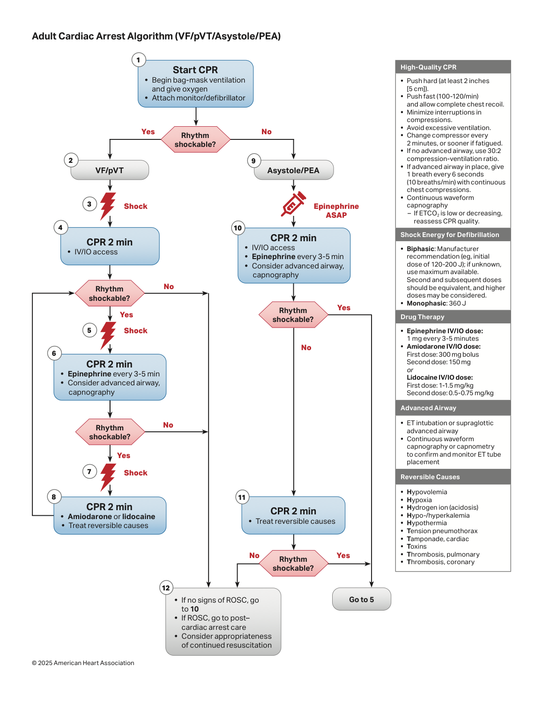
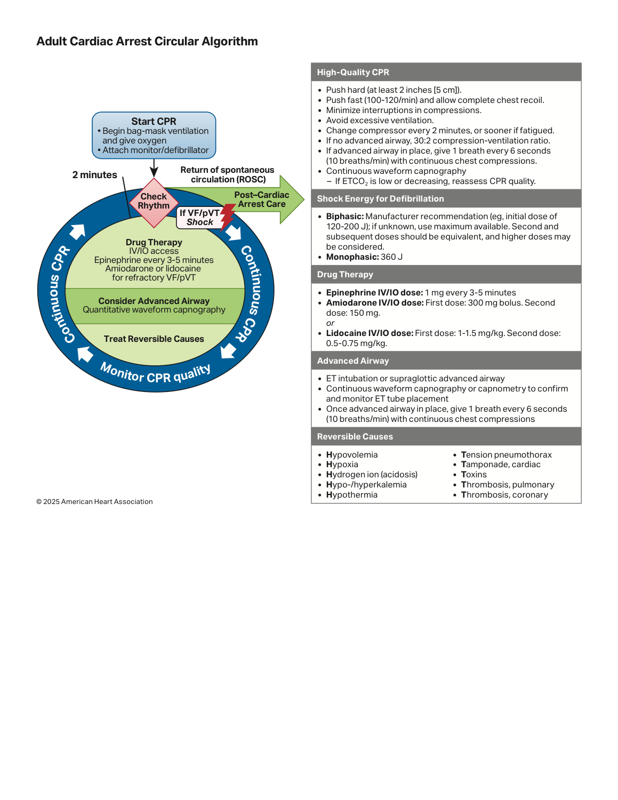
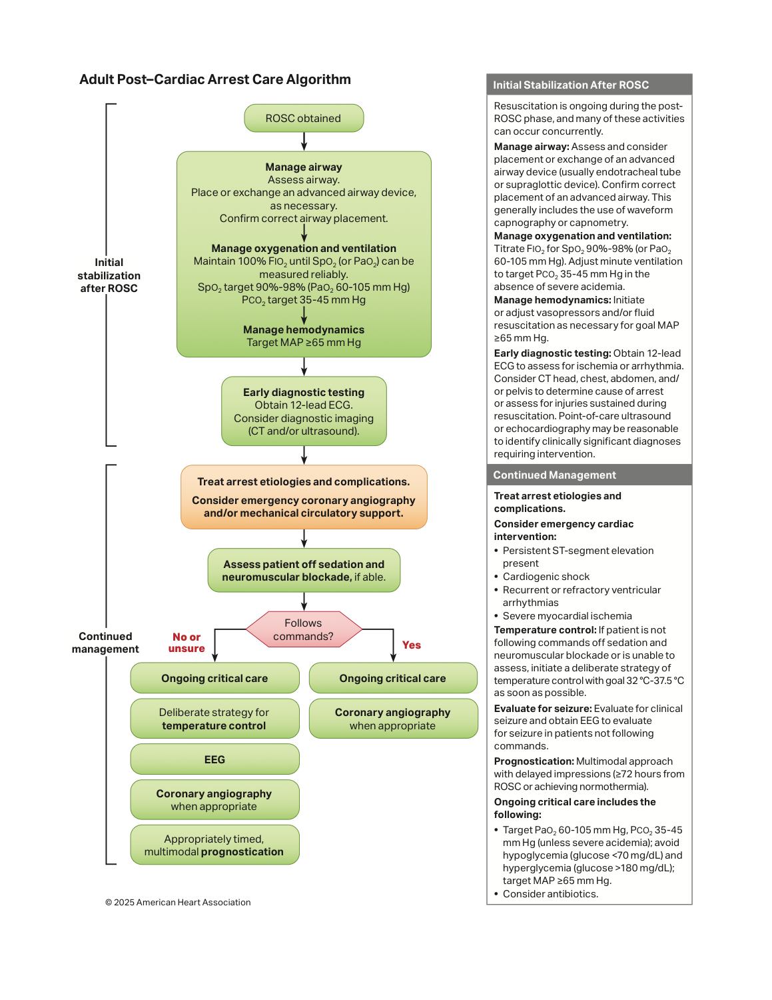
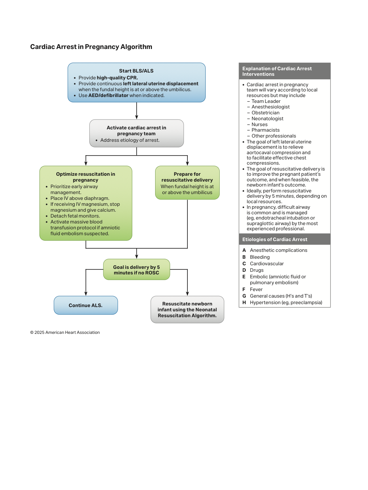
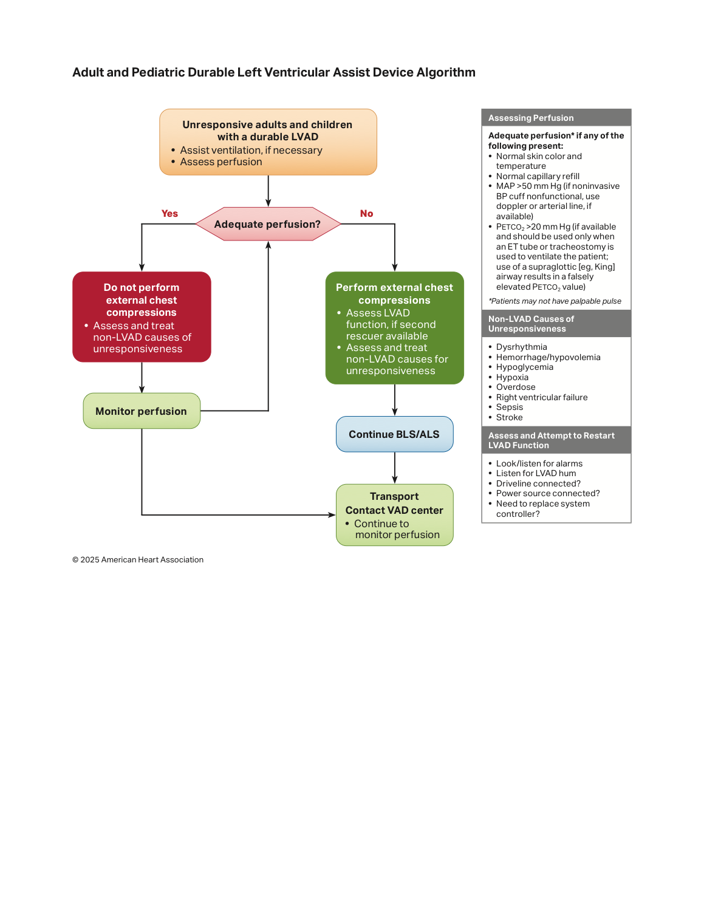
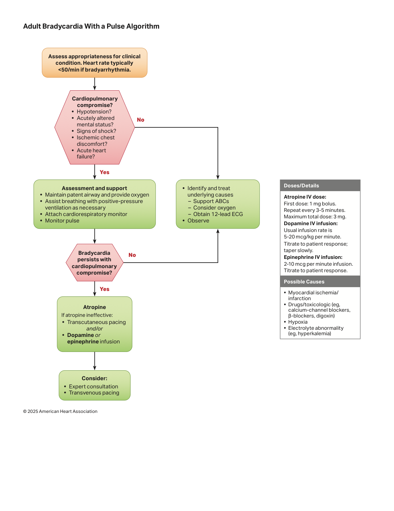
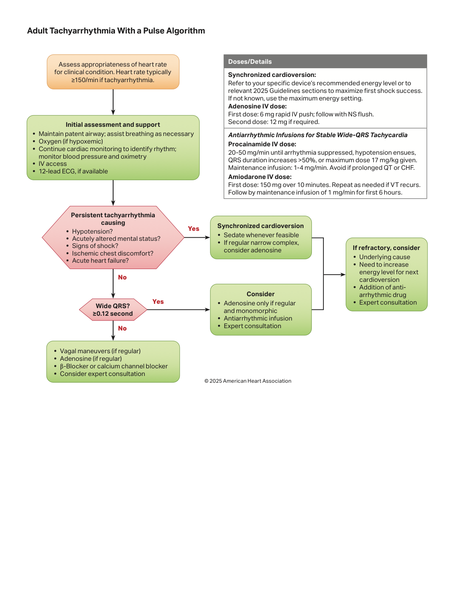
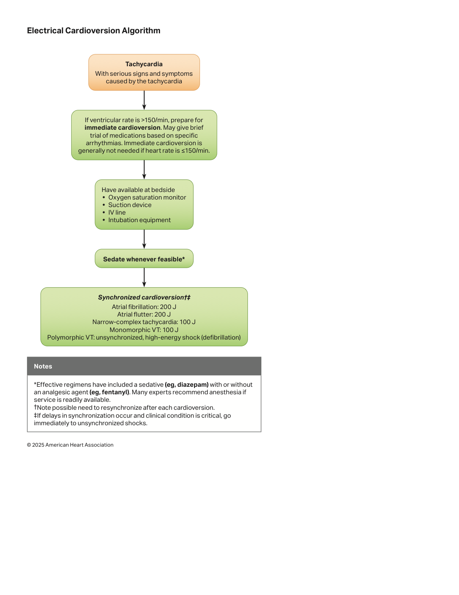

BLS — The Foundation Is High-Quality CPR
"Survival from cardiac arrest is determined less by any drug than by the quality and continuity of chest compressions and the speed of defibrillation. Every interruption in compressions costs coronary perfusion pressure that takes many compressions to rebuild. The entire ACLS edifice is built on, and must never compromise, the foundation of high-quality BLS."
AHA Guidelines for CPR & Emergency Cardiovascular Care, 2020 (Circulation 2020;142:S336–S604).⚡ Adult BLS Sequence
C–A–B: Check responsiveness & breathing + pulse (≤10 s) → call for help / activate emergency response & get the AED/defibrillator → start compressions → defibrillate the moment a shockable rhythm is found. For witnessed monitored arrest, immediate defibrillation takes priority.
Out-of-hospital: early recognition/activation → early CPR → early defibrillation → advanced resuscitation → post-arrest care → recovery. In-hospital: surveillance/prevention → activation → CPR → defibrillation → post-arrest care. Recovery (survivorship, rehabilitation) is now an explicit link in the chain.
Shockable vs Non-Shockable


Adrenaline 1 mg IV/IO after the 2nd shock, then every 3–5 min.
Amiodarone 300 mg (then 150 mg) IV/IO after the 3rd shock (or lidocaine 1–1.5 mg/kg).
Continue 2-min cycles: CPR → shock → drug/CPR; treat reversible causes throughout.
ACLS Drug & Energy Reference
| Drug | Indication | Dose | Notes |
|---|---|---|---|
| Adrenaline (epinephrine) | All arrests | 1 mg IV/IO q3–5 min | Non-shockable: ASAP. Shockable: after 2nd shock |
| Amiodarone | Refractory VF/pVT | 300 mg IV/IO → 150 mg | After 3rd shock; dilute in D5W |
| Lidocaine | Alternative to amiodarone | 1–1.5 mg/kg → 0.5–0.75 mg/kg | Either agent acceptable (AHA) |
| Magnesium sulphate | Torsades / hypomagnesaemia | 1–2 g IV/IO | NOT routine in cardiac arrest — only for torsades |
| Calcium / Bicarbonate | Specific causes only | Ca for ↑K⁺/↓Ca²⁺/CCB; HCO₃ for ↑K⁺/TCA/acidosis | Not routine — guided by the reversible cause |
| Naloxone | Suspected opioid arrest | 2 mg IM/IN or 0.4–2 mg IV | Adjunct to CPR (does not replace it) |
Biphasic 120–200 J (use the manufacturer's recommended dose; if unknown, use the maximum) — escalate to maximum for refractory VF. Monophasic 360 J. Minimise the peri-shock pause: charge during compressions, clear, shock, and resume compressions immediately (no post-shock rhythm/pulse check — resume CPR for 2 min first). Refractory VF: ensure pad position/contact, consider changing pad position (antero-posterior) and double sequential external defibrillation (DSED) or a vector change (DOSE-VF trial).
Find and Fix the Cause (especially in PEA/asystole)
The H's
- Hypoxia — oxygenate, confirm tube (capnography)
- Hypovolaemia — fluids/blood; haemorrhage control
- Hydrogen ion (acidosis) — ventilation; HCO₃ for specific causes
- Hypo/Hyperkalaemia — Ca + insulin/dextrose (↑K); replace (↓K)
- Hypothermia — rewarm; "not dead until warm and dead"
- Hypoglycaemia — check & treat
The T's
- Tension pneumothorax — needle/finger decompression
- Tamponade (cardiac) — pericardiocentesis / thoracotomy
- Toxins — antidotes (naloxone, bicarb for TCA, lipid emulsion, etc.)
- Thrombosis — coronary (MI) → PCI
- Thrombosis — pulmonary (massive PE) → thrombolysis
Post-Cardiac-Arrest Care & Special Circumstances (AHA 2025)



Bradycardia & Tachycardia (with a pulse)



Recent AHA / ILCOR Updates (2020 → recent focused updates)
• Double sequential external defibrillation (DSED) / vector change for refractory VF — supported by the DOSE-VF RCT (2022); now a reasonable option after standard shocks fail.
• Opioid-associated arrest — naloxone (IM/IN) integrated alongside CPR for suspected opioid overdose (2023/2024 focused updates), reflecting the overdose epidemic.
• Post-arrest temperature — shift from mandatory 32–34 °C hypothermia to active fever prevention / targeted temperature management ≤37.5 °C (TTM2 trial) — see the ROSC topic.
• No routine immediate coronary angiography in post-arrest patients without ST-elevation (TOMAHAWK/COACT).
• Recovery & survivorship added as a formal link; structured neuroprognostication delayed to ≥72 h, multimodal.
• Emphasis on CPR quality feedback, IO as a fast alternative to IV, and capnography for tube confirmation & CPR quality.
The AHA now publishes annual focused updates rather than one big revision; the comprehensive guidelines remain the 2020 edition with yearly amendments (2023, 2024, and ongoing). The principles above are stable, but always check the most recent AHA focused update for any year-specific change before quoting "the latest" in an exam or protocol.
Common Mistakes in Resuscitation
Long pauses for intubation, pulse checks, or charging the defibrillator destroy coronary perfusion pressure. Keep the chest-compression fraction high, pauses <10 s, charge during compressions, and resume CPR immediately after every shock.
Excessive ventilation raises intrathoracic pressure, reduces venous return and worsens outcomes. After an advanced airway, give only ~10 breaths/min; avoid bagging fast and hard.
Asystole and PEA are NOT shockable — focus on CPR + reversible causes. Conversely, in shockable rhythms every minute of delayed defibrillation lowers survival ~10% — shock early and minimise the peri-shock pause.
PEA/asystole rarely respond to adrenaline alone; survival depends on finding the reversible cause (tension pneumothorax, tamponade, PE, hyperkalaemia, hypovolaemia, toxins). Use POCUS and the history — but don't prolong compression pauses.
Hypothermia ("not dead until warm and dead"), thrombolysed PE (continue CPR 60–90 min), and toxic/local-anaesthetic arrest may need prolonged resuscitation and specific therapies. Tailor the duration to the cause.
Achieving ROSC is the beginning, not the end. Targeted temperature/fever control, oxygen & CO₂ targets, haemodynamic support, treat the cause (PCI if indicated) and delayed multimodal neuroprognostication all determine neurological outcome — see the ROSC topic.
References
- Panchal AR, Bartos JA, Cabañas JG et al. Part 3: Adult Basic and Advanced Life Support: 2020 AHA Guidelines for CPR and ECC. Circulation 2020;142(suppl 2):S366–S468.
- American Heart Association. 2023 & 2024 Focused Updates on Advanced Cardiovascular Life Support / Resuscitation. Circulation (annual focused updates).
- Cheskes S, Verbeek PR, Drennan IR et al. (DOSE-VF). Defibrillation Strategies for Refractory Ventricular Fibrillation. N Engl J Med 2022;387:1947–1956.
- Perkins GD, Ji C, Deakin CD et al. (PARAMEDIC-2). A Randomized Trial of Epinephrine in Out-of-Hospital Cardiac Arrest. N Engl J Med 2018;379:711–721.
- Dankiewicz J, Cronberg T, Lilja G et al. (TTM2). Hypothermia versus Normothermia after Out-of-Hospital Cardiac Arrest. N Engl J Med 2021;384:2283–2294.
- Soar J, Böttiger BW, Carli P et al. (ERC). European Resuscitation Council Guidelines 2021: Adult advanced life support. Resuscitation 2021;161:115–151.